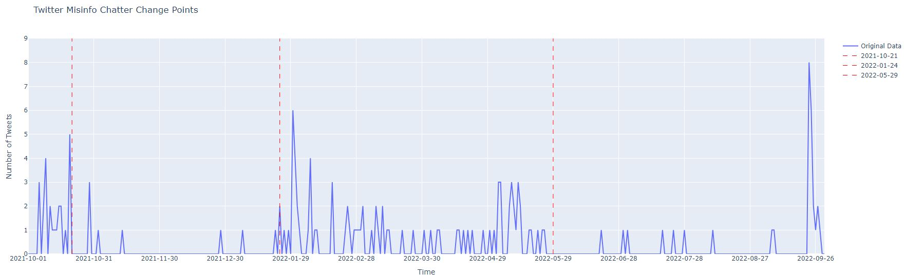
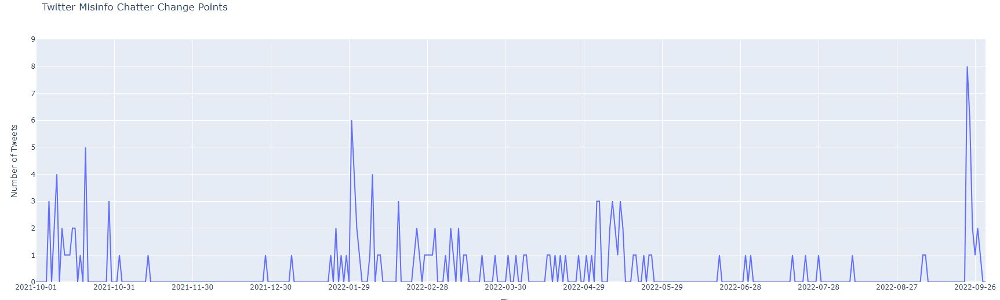
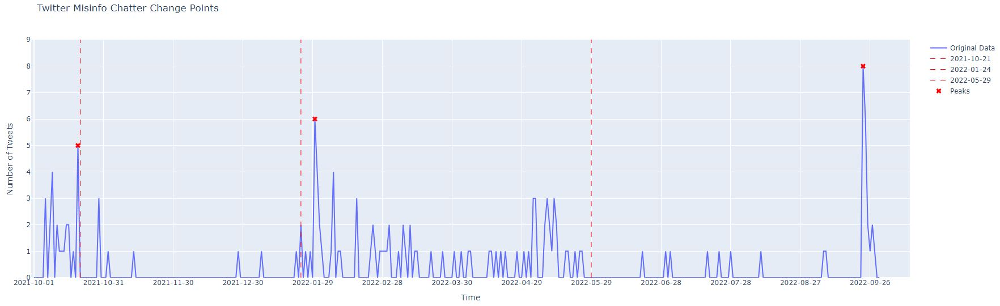
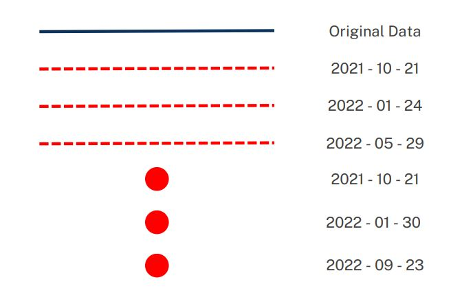
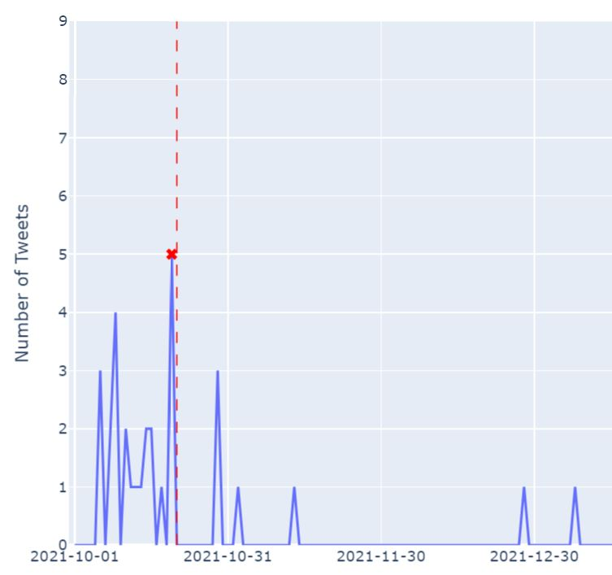
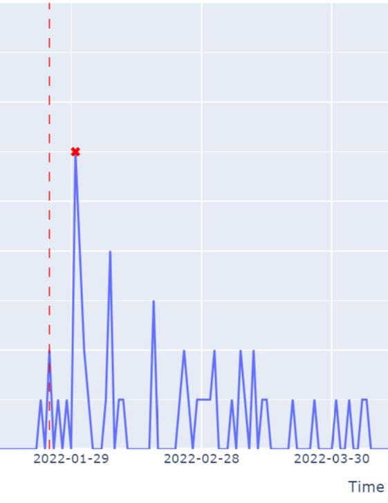
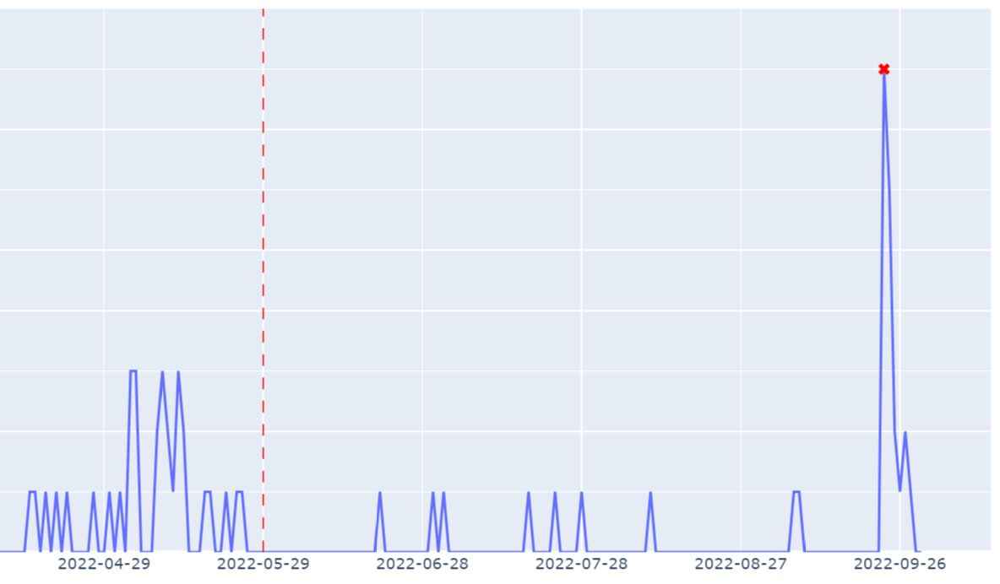

Statistical Modeling
Normality and Equal Variances Tests
Before proceeding with the statistical approach, the data was split into three different categories: before, during and after the campaign period.
For the normality test, Anderson-Darling and Shapiro-Wilk tests were first applied to determine the normality of the splitted data sets. As for checking if the variances are equal, the Levene test was performed on the said data sets.
Anderson-Darling Test:
Ho = The data is normally distributed.
Ha = The data is not normally distributed.
| Dataset | A Test Statistic | Critical Values | Significance Level |
|---|---|---|---|
| Pre-campaign | 2.419 | 0.705 | 0.050 |
| 0.822 | 0.025 | ||
| 0.978 | 0.010 | ||
| Campaign | 7.718 | 0.718 | 0.050 |
| 0.838 | 0.025 | ||
| 0.996 | 0.010 | ||
| Post-campaign | 4.636 | 0.703 | 0.050 |
| 0.820 | 0.025 | ||
| 0.975 | 0.010 |
Shapiro-Wilk Test:
Ho = The data is normally distributed.
Ha = The data is not normally distributed.
| Dataset | P-value |
|---|---|
| Pre-campaign | 5.070e-05 |
| Campaign | 5.648e-09 |
| Post-campaign | 9.822e-08 |
Given that the test statistics for all data sets are significantly larger than their respective critical values for the Anderson-Darling Test, the null hypothesis is rejected and it can be concluded that the three datasets do not have a normal distribution. On the other hand, provided that the p-values for the Shapiro-Wilk Test across all data sets are less than the level of significance of 0.05, the null hypothesis is rejected which further confirms that the datasets are not normal.
Levene Test:
Ho = The datasets have equal variances.
Ha = The datasets do not have equal variances.
| Datasets compared | P-value |
|---|---|
| Pre-campaign vs Campaign vs Post-campaign | 0.048 |
The p-value for the Levene Test is less than the level of significance 0.05 which suggests that we reject the null hypothesis implying the data sets do not have equal variances.
Kruskal-Wallis Test
First the assumptions for the Kruskal-Wallis Test are as follows:
1. The data does not have to be normally distributed.
2. The data must have equal variances.
From the section on Normality and Equal Variances Tests, Assumption 2 is violated by the current dataset. As a result, the medians or means cannot be compared since minor differences in the variances may result to higher errors (Fagerland & Sandvik, 2009). Therefore, the Kruskal-Wallis Test in this case can only conclude if there is a statistical difference between the groups i.e., checking if a group's sample could have significantly different values than the other samples from different groups.
The data in the three categories (pre-campaign, campaign, post-campaign) will be compared using the Kruskal-Wallis Test in order to answer the following hypothesis:
Ho = There is no significant difference in the number of BBM credit-grabbing tweets before, during and after the campaign period.
Ha = There is significant difference in the number of BBM credit-grabbing tweets before, during and after the campaign period.
The table below presents the test statistic value and p-value after performing Kruskal-Wallis Test on the non-normal splitted datasets with 0.05 level of significance using Scipy.
| Datasets compared | H Test statistic | x2 critical value (df=2) | P-value | Significance Level |
|---|---|---|---|---|
| Pre-campaign vs Campaign vs Post-campaign | 5.423 | 5.991 | 0.066 | 0.05 |
Observe that for the Kruskal-Wallis Test , the test statistic is less than the critical value and the p-value is greater than the significance level thus we fail to reject the null hypothesis. In other words, there is no significant difference in the number of BBM credit-grabbing tweets before, during and after the campaign period. To explore more on this finding, a post hoc analysis was also performed through Mann-Whitney U Test.
Mann-Whitney U Test
First it must be noted that the Kruskal-Wallis Test is equivalent to the Mann-Whitney U Test but for more than two groups (du Prel et al., 2010). Hence, the same assumptions from Kruskal-Wallis can be applied. Note that with Mann-Whitney U Test pairwise comparisons would be made with the campaign period as the point of reference.
To further check for possible statistical significance, a One-Tailed Mann-Whitney U Test is performed for post hoc analysis of pairwise groups with the following hypothesis:
Ho = There is no significant change in the number of BBM credit-grabbing tweets before, during and after the campaign period.
Ha = BBM credit-grabbing tweets are significantly less during the campaign period than the time period being compared.
| Datasets compared | U Test statistic | Critical value | P-value | Significance Level |
|---|---|---|---|---|
| Campaign vs Pre-campaign | 309 | 331 | 0.009 | 0.05 |
| Campaign vs Post-campaign | 382 | 317 | 0.201 | 0.05 |
Contrary to the results of the Kruskal-Wallis Test, the One-tailed Mann Whitney U Test shows that for the campaign and pre-campaign datasets, the test statistic is less than the critical value and the p-value is less than the significance level therefore the null hypothesis is rejected. The implication of this finding is that there are significantly less BBM credit-grabbing tweets during the campaign period than the pre-campaign period. However, for the campaign vs post-campaign Mann Whitney U Test both the test statistic and the p-value are greater than the critical value and significance level, respectively. This implies that there is no significant difference between the number of BBM credit-grabbing tweets during and after the campaign period.
To analyze the possible causes to these results, a computational was used on the split datasets.
Computational Modeling
Event Detection Modeling
Event detection model was selected as the computational model to analyze the dataset. Event detection modeling detects change points and peaks on the dataset. Using these outputs, dates with the most amount of disinformation tweets and dates that indicate a change in pattern was used to find events that contributed to the dataset's pattern.
PELT Algorithm
The algorithm used in the event detection model was the Pruned Exact Linear Time (PELT) algorithm. The PELT algorithm has one parameter called the penalty value. The penalty value determines the number of change points that will be displayed in the model. Lowering the penalty value subjects the dates to have a higher sensitivity. Hence, a higher penalty is desired to avoid including dates that may be irrelevant. After a few tweaks on this parameter, the penalty value of 4 was chosen with the results shown below.
In the image above, we can see the results of choosing the penalty value of 4. This is also the same results that we get if we change the penalty value to 3 (lowering the penalty value). This implies that these dates are significant for our findings.
Changing the penalty value to 5 shows no change points as shown above. Hence, considering the data with a low sensitivity, the penalty value of 4 was chosen.
The parameter for the peaks that were relevant for tweaking is the minimum heigh of the considered peak. For this we chose 5 as the height. Lowering the peak height to 4, adds two more peaks that might be irrelevant to our findings. Additionally, the height of 4 would be just 1 tweet away from numerous points in the data.
Interpretting and Explaining the Results via Real-life Events
The dates above are the dates that were gathered from the event-detection modelling. The peak dates are October 20, 2021, January 30, 2022, and September 23, 2022. The dates for the change points are October 21, 2021, January 24, 2022, and May 29, 2022.
The first dates obtained from the peak and change points are October 20, 2022, and October 21, 2022. In the days of October, multiple tweets can be seen within the said month. This is the month that BBM has filed his Certificate of Candidacy (CoC), October 6, 2021 (PNA, 2021) . The number of tweets after this month dropped.
Only up until the change point January 24, 2022 do we see an increase of tweets. The second peak (January 30, 2022) can also be seen in this month. It was reported by Twitter to the AFP that Twitter accounts supporting BBM was suspended due to violation of platform manipulation and spam policy (Rappler, 2022) .
The high number of tweets continued up until the next change point at May 29, 2022 (end of elections month). Little to no tweets were seen after the last change point. Only on September 23, 2022 do we see a large amount of tweets (last peak). This is the day after Joe Biden praised BBM for his ‘work’ on windmills, on September 22, 2022 at the UN General Assembly (Philstar, 2022) .